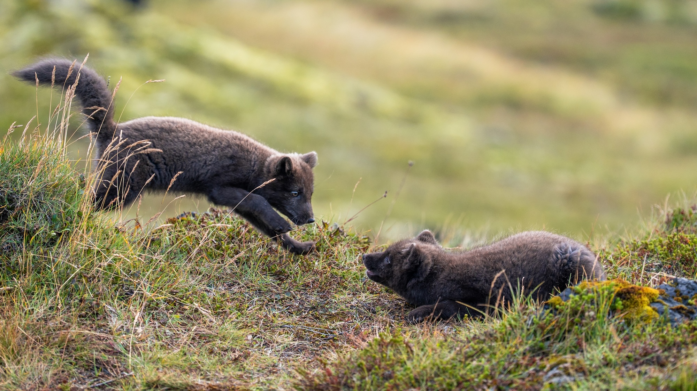

When the moon hits your eye like a big pizza pie, do you feel the urge to fly out and take a closer look at that white mottled orb suspended in the night sky, to descend into its valleys and frost-bitten craters where even atmosphere can barely cling?
Would you loose yourself like an arrow from Artemis's bow, surrendering to the pull of gravity, at the hand of fate, hoping to glimpse something new on the far side of the moon, kept hidden from us since the beginning?
And when you meet that unseen patch of moon, would it feel like discovery, or would it feel like coming home, to a radiant absence, as if you had been missing it without knowing: the other half of Earth, broken from our planet by an ancient collision, drifting into space only to be caught in our orbit?
What was it like then, when we were one body, sailing across the Sea of Serenity, skipping stones across the Orientale Basin four billion years ago?

